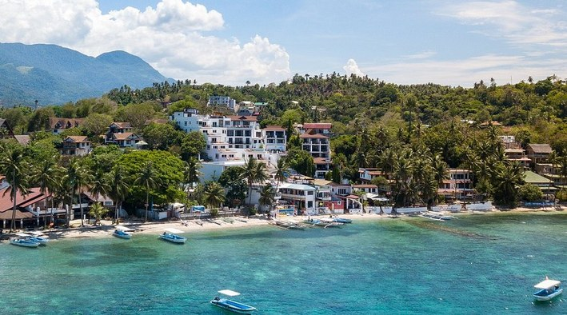

San Isidro
White Beach
10 to 15 minutes from Balatero Port.

PLACES TO VISIT
DESTINATION GUIDE
Each area has its own mood. Pick one for lively nights, one for reefs, and one for quiet mornings.
10 to 15 minutes from Balatero Port.

20 to 30 minutes from Balatero Port.

Harbor promenade, shops and cafes.

Where most Batangas ferries arrive.

A tall waterfall. Entrance fee applies.

Quiet beaches with mountain views.
LOCATION MAP
The map shows Puerto Galera on the northern tip of Oriental Mindoro. Ports are the best reference points for planning your travel time.
Travel times are approximate and depend on traffic and sea conditions.